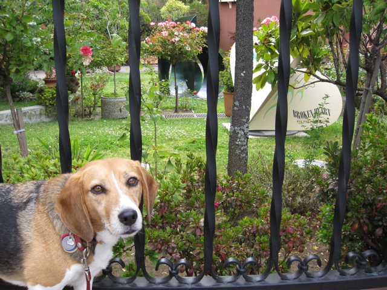

<--Previous
Up
Next-->

Broken Heart, But Not Heartbroken
"Broken Heart" has been in the yard of the Delancey Street Foundation (seen from Brannan & Delancey) for years. I believe that's a second, recently added heart farther back.